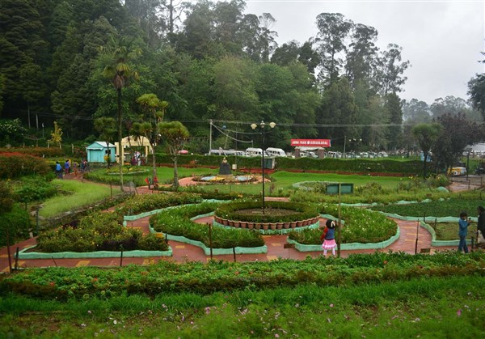
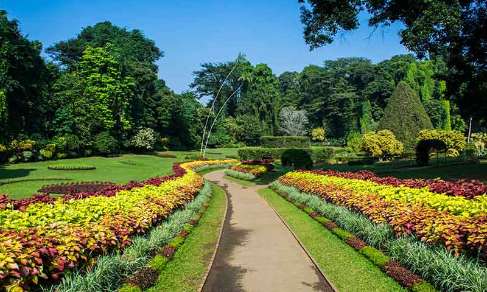

Parks
Aliyar Dam Resovoir Park

Anna Tower Park

Bryant Park

Semmozhi Poonga

Yelagiri Nature Park

About Us
Welcome to Tamilnadu Tales!
Your window to the soul of Tamilnadu's enchanting tourist places. Explore with us as we showcase the beauty, history, and charm of each destination, creating a visual feast for the travel enthusiast in you.